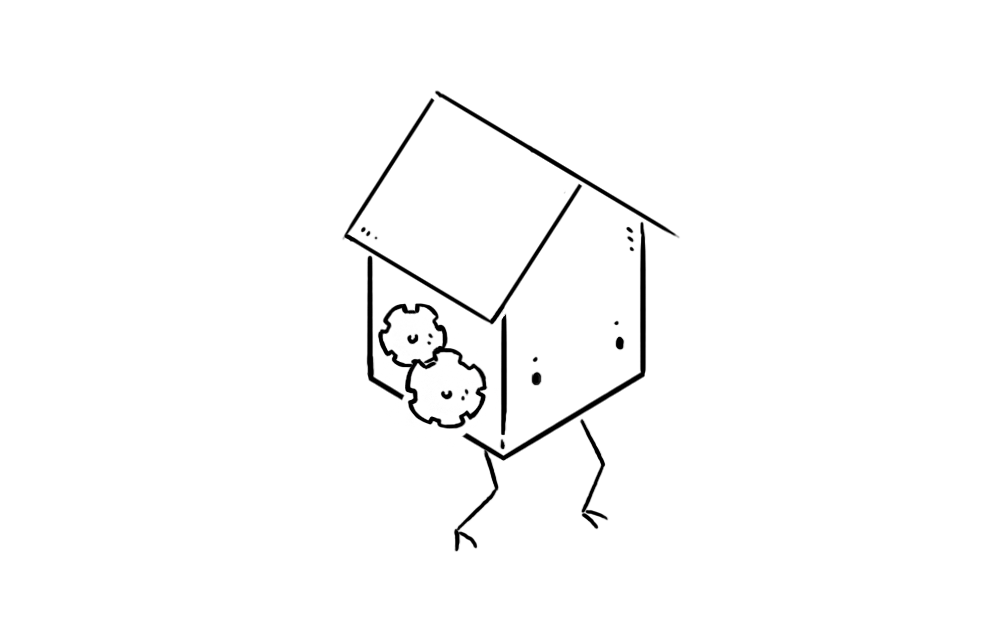

Parade is the primitives of Paradise.
| create | become | enter | leave |
| take | drop | warp | transform |
| note | program | use | look* |

The goal of this project is to build a lightweight computing environment able to navigate a hierarchy of vessels, run code and exchange content with other Parade instances, via the basic primitives.
create a machine > |

There are no "users", "files" or "applications", in this filesystem, everything is an operable vessel. A vessel is an object that can act onto other vessels, it has its own permissions. Users are not different from applications or files. A user, is a vessel being acted upon, possibly containing other vessels. A file is an inert vessel, that has no applicable actions to itself but may contain text data accessible via the primitives.
enter the machine > |

A new vessel responds to the basic primitives, and visible vessels might append to that list with actions of their own. The vessel format serves endpoints that responds to actions. For instance, a telephone vessel, might respond to the action call, as in the command "call Alice".
There is no linear hierarchy tree, instead vessels can be within themselves or each other, or even organized in the shape of a loop. Pockets of space can be hosts to vessels existing around a common purpose, or carried around inside another vessel as you would a tool-belt or an inventory, giving the acting vessel, or user, additional actions appended to the list of primitives.
become the machine > |
One of the goals of this operating system is to be fully operable by voice, think screenless computing. The navigation is designed to be used via simple text commands, there would be nothing quite like windows. Vessels could display passive content when in sight, allowing to create a form of procedural user interface, but the system itself does not have a concept of windows, like you would in a typical graphical operating system with a wm.
While the navigation of the system can be done by voice alone, the terminal, when presented on a screen, begins with a prompt, to which can be appended a history of responses, or even a display area for graphics when a vessel is serving a game or a movie.
use the machine > |
At its core the system should be single-threaded, and operate a single frame, or a state, of the world at a time. While passive responses of visible vessels might allow for a kind of oversight, the user experience as a terminal, and down to its functioning should not allow for multi-tasking.
The creation of application vessels, think for instance a drawing application, would be built with the LISP dialect of Parade, which is itself built with that same language. — Making the entire operating system existing it inself as a vessel, editable, changeable, operable and navigable.
warp to the lobby@29:03:25:76 > |
A Network of Parade systems would be traversible(read-only) by an acting vessel. The Parade's typical behaviours for moving about will persist onto the remote systems so, a vessel can move, enter, use remote vessels and suggest changes to the host world as commits — All the while, respecting the host's vessel permissions. For instance, a vessel might make itself usable by a visiting vessel, but will not let itself be moved or altered.